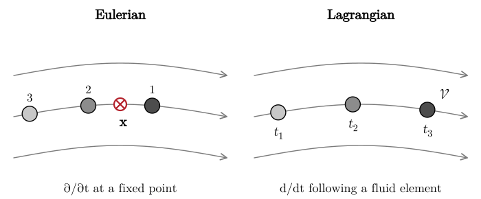

5 Eulerian and Lagrangian Descriptions
5.1 Motivation
Up to this point, we have considered the equation of motion for individual fluid elements. This is the so-called Lagrangian description of fluid mechanics. However, there are many problems in which it is more convenient to work with equations that describe the density, velocity, and temperature of the fluid at a specific point in space, and not for individual fluid elements. In other words, we want to solve for \(\rho (t, \mathbf{x})\) and \(\mathbf{v} (t, \mathbf{x})\), as opposed to \(\rho (t ; \mathcal{V})\) and \(\mathbf{v} (t ; \mathcal{V})\). This is the so-called Eulerian approach.
As motivation, we consider a celestial body of mass \(M\), for example a planet or a star, that is accreting matter at a constant rate \(\dot{M}\). \(M\) and \(\dot{M}\) are unknown, but we know density and velocity of the fluid at a given radius \(r_0\) from spatially resolved observations of an emission line. How can we estimate \(M\) and \(\dot{M}\)? We assume the in-falling matter to have no angular momentum, so that the flow is radial. We also neglect radiation pressure and fluid pressure (\(p = 0\)). We will consider the more general case in which pressure forces are included later in the course (Chapter 13). However, we remark that the pressureless approximation provides an accurate description of the flow when it is highly supersonic (close to the surface of the accretor).
The equations of motion for the gas (assuming spherical symmetry) are \[ \frac{1}{\rho} \frac{\mathrm{d} \rho}{\mathrm{d} t} = - \frac{1}{r^2} \partial_r (r^2 v), \qquad \frac{\mathrm{d} v}{\mathrm{d} t} = - \frac{GM}{r^2} . \tag{5.1}\] In the new language we have just introduced, these are the Lagrangian equations of motion. That is, they describe the density and velocity of each fluid element. Note that, even though the problem describes a steady state system, we cannot drop the time derivatives, because each individual fluid element is not stationary, but it is in free fall.
Consider a fluid element that starts at rest at large distance from the accretor. Since the fluid elements are not subject to any force besides gravity, they are in free fall \[ v = - \sqrt{\frac{2 GM}{r}} . \tag{5.2}\] Inserting this into the continuity equation yields: \[ \frac{1}{\rho} \frac{\mathrm{d} \rho}{\mathrm{d} t} = \frac{3 \sqrt{2 GM}}{2 r^{3 / 2}} . \tag{5.3}\] Here, we need to be careful, because in the Lagrangian framework \(r = r (t)\), since we are traveling with each fluid element. So, before we can solve the continuity equation, we need to find \(r\) as solution of \[ \frac{\mathrm{d} r}{\mathrm{d} t} = - \sqrt{\frac{2 GM}{r}} . \tag{5.4}\] This equation can be solved analytically assuming the initial radius to be \(r (0) = r_0\), but its solution is rather complex: \[ r (t) = \left( - \frac{3 \sqrt{2 GM} t}{2} + r_0^{3 / 2} \right)^{2 / 3} . \tag{5.5}\] Plugging this back into the continuity equation, we find \[ \frac{1}{\rho} \frac{\mathrm{d} \rho}{\mathrm{d} t} = - \frac{3 \sqrt{2 GM}}{3 \sqrt{2 GM} t - 2 r_0^{3 / 2}} . \tag{5.6}\] This can be solved with initial conditions \(\rho (0) = \rho_0\) to yield \[ \rho (t) = \frac{2 r_0^{3 / 2} \rho_0}{2 r_0^{3 / 2} - 3 \sqrt{2 GM} t} . \tag{5.7}\] After all of this work, we still do not have \(\rho\) as a function of radius: for that we need to solve \(t\) from Equation 5.5 and plug the result back into Equation 5.7. Note, however, that the denominator in Equation 5.7 is just \(2 r^{3 / 2}\), so \(\rho = \rho_0 (r_0 / r)^{3 / 2}\) along each fluid element. Since the flow is steady, every fluid element has density \(\rho_0\) when it crosses \(r_0\), so this is also \(\rho (r)\). We got there, but only after solving for the trajectory of each fluid element. We also still need to relate \(\rho_0\) to \(\dot{M}\)… Wouldn’t our lives have been much simpler if we could have solved directly for \(\rho (t, r)\)? As we will see shortly, the Eulerian formulation of fluid mechanics gives us \(\rho (r)\) directly, without ever computing a trajectory.
5.2 Advective derivative
We leave for a moment the problem of the spherical accretion, to develop the general theory of the Eulerian formulation of fluid mechanics. Let \(A (t ; \mathcal{V})\) be some quantity that is specific to a fluid element \(\mathcal{V}\). For example, \(A\) could be the density or the velocity of the fluid element \(\mathcal{V}\). The same quantity can also be thought of as being a function of position: \[ A (t, \mathbf{x}) := A \left( t ; \text{``fluid element at location $\mathbf{x}$ at time $t$''} \right) . \tag{5.8}\] If the law of motion of each fluid element is known, then it is possible to compute \(A (t, \mathbf{x})\) from \(A (t ; \mathcal{V})\). We have done this in the case of the homologously expanding flow (Section 1.3), when we needed to compute \(v (t, r)\) given \(v (t, q)\), where \(q\) was the “label” we used to identify the fluid elements.
Consider a fluid element \(\mathcal{V}\) with trajectory \(\mathbf{x} (t)\). Then, at time \(t\) \[ A (t ; \mathcal{V}) = A (t, \mathbf{x} (t)) . \tag{5.9}\] We can differentiate both sides with respect to \(t\) to find \[ \begin{aligned} & \frac{\mathrm{d} A (t ; \mathcal{V})}{\mathrm{d} t} = \frac{\mathrm{d} A (t, \mathbf{x} (t))}{\mathrm{d} t} \\ & \quad = \frac{\partial A (t, \mathbf{x} (t))}{\partial t} + \biggl( \frac{\mathrm{d} x}{\mathrm{d} t} \partial_x + \frac{\mathrm{d} y}{\mathrm{d} t} \partial_y \\ & \qquad\qquad + \frac{\mathrm{d} z}{\mathrm{d} t} \partial_z \biggr) A (t, \mathbf{x} (t)) \\ & \quad = \frac{\partial A (t, \mathbf{x} (t))}{\partial t} + \left( \frac{\mathrm{d} \mathbf{x}}{\mathrm{d} t} \cdot \nabla \right) A (t, \mathbf{x} (t)) \\ & \quad = \frac{\partial A (t, \mathbf{x} (t))}{\partial t} + (\mathbf{v} \cdot \nabla) A (t, \mathbf{x} (t)), \end{aligned} \tag{5.10}\] where we used the chain rule for differentiation and the definition of velocity. Equation 5.10 gives us a way to relate the time derivative of a quantity defined with respect to fluid elements to the same quantity taken to be a function of spatial position and time. The reason why \[ \frac{\mathrm{d} A (t ; \mathcal{V})}{\mathrm{d} t} \neq \frac{\partial A (t, \mathbf{x} (t))}{\partial t} \tag{5.11}\] is that the partial derivative with respect to time considers the rate of change of \(A\) at a fixed location, but there are different fluid elements crossing that location as a function of time. This is illustrated in Figure 5.1. The operator \(\frac{\mathrm{d}}{\mathrm{d} t}\) that we have used so far is called the advective derivative (also material, or Lagrangian, derivative; many books write it as \(D / Dt\)), because it represents the rate of change of a quantity measured when riding along a fluid element.

Equation 5.10 can be written more succinctly as \[ \boxed{\frac{\mathrm{d} A}{\mathrm{d} t} = \frac{\partial A}{\partial t} +\mathbf{v} \cdot \nabla A.} \tag{5.12}\] To be mathematically precise, we should keep in mind that this relation represents the equivalence between two different mathematical operations performed on different objects. The \(A\) on the LHS is a function of only time for a fixed fluid element \(\mathcal{V}\), while the \(A\) on the RHS is a function of position and time and is not specific to any single fluid element.
5.3 Eulerian formulation of fluid mechanics
The Eulerian equations can be obtained from the Lagrangian equations by replacing all advective derivatives: \[ \begin{aligned} \frac{\mathrm{d} \rho}{\mathrm{d} t} & \rightarrow \frac{\partial \rho}{\partial t} + (\mathbf{v} \cdot \nabla) \rho, \\ \frac{\mathrm{d} \mathbf{v}}{\mathrm{d} t} & \rightarrow \frac{\partial \mathbf{v}}{\partial t} + (\mathbf{v} \cdot \nabla) \mathbf{v}, \\ \frac{\mathrm{d} \varepsilon}{\mathrm{d} t} & \rightarrow \frac{\partial \varepsilon}{\partial t} + (\mathbf{v} \cdot \nabla) \varepsilon . \end{aligned} \tag{5.14}\]
The continuity equation (Equation 1.15) becomes \[ \frac{\partial \rho}{\partial t} + (\mathbf{v} \cdot \nabla) \rho + \rho \nabla \cdot \mathbf{v}= 0. \tag{5.15}\] In Cartesian coordinates, we can expand all derivatives as \[ \begin{aligned} & (\mathbf{v} \cdot \nabla) \rho + \rho \nabla \cdot \mathbf{v} \\ & \quad = v_x \partial_x \rho + v_y \partial_y \rho + v_z \partial_z \rho \\ & \qquad\qquad + \rho \partial_x v_x + \rho \partial_y v_y + \rho \partial_z v_z \\ & \quad = \partial_x (\rho v_x) + \partial_y (\rho v_y) + \partial_z (\rho v_z) \\ & \quad = \nabla \cdot (\rho \mathbf{v}) . \end{aligned} \tag{5.16}\] So the continuity equation can be written as \[ \boxed{\frac{\partial \rho}{\partial t} + \nabla \cdot (\rho \mathbf{v}) = 0.} \tag{5.17}\]
The velocity equation (Equation 4.12) can be written as \[ \boxed{\rho \frac{\partial \mathbf{v}}{\partial t} + \rho (\mathbf{v} \cdot \nabla) \mathbf{v}= - \nabla p + \mathbf{f}.} \tag{5.18}\] The term \((\mathbf{v} \cdot \nabla) \mathbf{v}\) is the acceleration of a fluid element due to the fact that it moves to places where the velocity is different. For this reason, fluid elements can accelerate even in a steady flow, in which \(\partial_t \mathbf{v} = 0\). The spherical accretion flow of the next section is an example.
In the same way, the energy equation (Equation 2.39) becomes \[ \rho \frac{\partial \varepsilon}{\partial t} + \rho (\mathbf{v} \cdot \nabla) \varepsilon = \rho \dot{q} - p \nabla \cdot \mathbf{v} . \tag{5.19}\] We will write these equations in conservative form in Chapter 6.
5.4 Pressureless spherical accretion
We are now ready to solve the problem of the spherical accretion of a pressureless fluid that we have attempted to solve at the beginning of this chapter. Because the Eulerian equations deal with quantities as a function of position and time, all time derivatives vanish for a steady flow and we find: \[ \partial_r (r^2 \rho v) = 0, \qquad v \partial_r v = - \frac{GM}{r^2} . \tag{5.20}\] The second equation can be written as \[ \frac{1}{2} \partial_r (v^2 ) = - \frac{GM}{r^2}, \tag{5.21}\] which can be integrated to give, for an infalling flow that is at rest at large distances, \[ v (r) = - \sqrt{\frac{2 GM}{r}} . \tag{5.22}\] The continuity equation shows that \[ r^2 \rho v = \mathrm{const} . \tag{5.23}\] Apart from a \(4 \pi\) factor, this is the accretion rate, because the inflow of mass across a surface of radius \(r\) is (assuming spherical symmetry): \[ \dot{M} = - \oint r^2 \rho v \mathrm{d} \Omega = - 4 \pi r^2 \rho v. \tag{5.24}\] So \[ \rho (r) = - \frac{\dot{M}}{4 \pi r^2 v} = \frac{\dot{M}}{4 \pi \sqrt{2 GM} r^{3 / 2}} . \tag{5.25}\] We can now solve for \(M\) using Equation 5.22 and for \(\dot{M}\) using Equation 5.25. Evaluating them at \(r_0\), where \(\rho = \rho_0\) and \(v = v_0\), we find \[ M = \frac{r_0 v_0^2}{2 G}, \qquad \dot{M} = 4 \pi r_0^2 \rho_0 | v_0 |, \tag{5.26}\] which answers the question we asked at the beginning of the chapter.
5.5 In-class worksheet
Consider the planar rotating flow \(\mathbf{v} = (- y, x, 0)\) of Figure 1.4 and a steady temperature field \(T (\mathbf{x}) = T_0 + \alpha x\), where \(T_0\) and \(\alpha\) are constants.
What is the rate of change of the temperature, \(\partial_t T\), at a fixed point?
What is the rate of change of the temperature, \(\mathrm{d} T / \mathrm{d} t\), of the fluid element located at \((x, y)\)?
Explain the difference between the two results.
An emission line from gas falling radially onto a star is observed at the radius \(r_0 = 10\,R_{\odot}\), where the gas has velocity \(v_0 = - 200\,\mathrm{km\,s^{-1}}\) and density \(\rho_0 = 10^{-15}\,\mathrm{g\,cm^{-3}} = 10^{-12}\,\mathrm{kg\,m^{-3}}\). Assuming pressureless free fall, estimate the mass of the star in units of \(M_{\odot}\) and the accretion rate in units of \(M_{\odot}\,\mathrm{yr^{-1}}\).
5.6 Exercises
Exercise 5.1 (Eulerian and Lagrangian frames) A fluid moves so that, at time \(t\), the position \(\mathbf{x}= (x_1, x_2, x_3)\) of a fluid element initially located at \(\mathbf{q}= (q_1, q_2, q_3)\) is \[ \begin{alignedat}{2} x_1 &{}={} && \frac{1}{2} (q_1 + q_2) \mathrm{e}^t + \frac{1}{2} (q_1 - q_2) \mathrm{e}^{- t}, \\ x_2 &{}={} && \frac{1}{2} (q_1 + q_2) \mathrm{e}^t - \frac{1}{2} (q_1 - q_2) \mathrm{e}^{- t}, \\ x_3 &{}={} && q_3 . \end{alignedat} \tag{5.27}\]
Find the initial position \((q_1, q_2, q_3)\) of a fluid element currently at \((x_1, x_2, x_3)\). [You need to invert Equation 5.27 to find \(\mathbf{q}= \mathbf{q} (t, \mathbf{x})\).]
Compute the velocity \(\dot{\mathbf{x}} (t ; \mathbf{q})\) and acceleration \(\ddot{\mathbf{x}} (t ; \mathbf{q})\) of the fluid elements.
Find the Eulerian velocity \(\mathbf{v} (t, \mathbf{x}) = \dot{\mathbf{x}} [t ; \mathbf{q} (t, \mathbf{x})]\) and acceleration \(\mathbf{a} (t, \mathbf{x}) = \ddot{\mathbf{x}} [t ; \mathbf{q} (t, \mathbf{x})]\).
Verify that \(\mathbf{a}= \partial_t \mathbf{v}+ (\mathbf{v} \cdot \nabla) \mathbf{v}\).
Is the flow incompressible? Sketch the streamlines.
5.7 Further reading
- Clarke and Carswell (2007), Chapter 2 (the fluid equations).